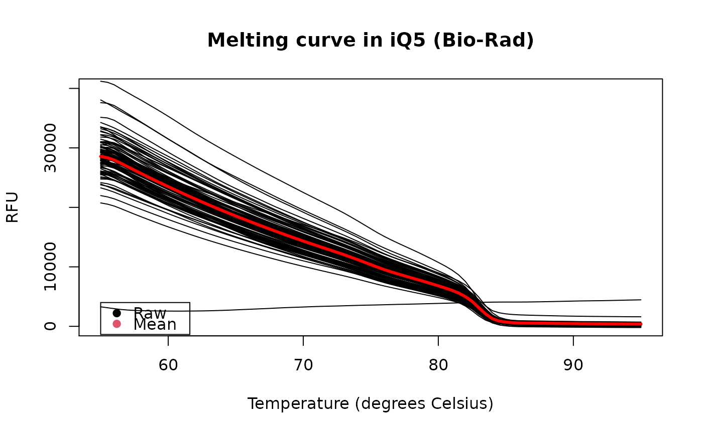

chipPCR packagechipPCR.datasets.RdThe chipPCR package contains numerous data sets from commercial and
experimental technologies for the amplification of nucleic acids. The data
sets include results from qPCR experiments with the 'VideoScan' 'HCU'
(Roediger et al. 2013), Bio-Rad (iQ5, CFX96), capillary convective PCR (ccPCR) and
Roche Light Cycler 1.5. Real-time monitored amplification reactions were
performed using standard amplification methods (qPCR, based on Taq
polymerase) and quantitative isothermal amplification (qIA). In selected
data
sets are melting curves and dilution series available. Most of the data
sets have equidistant measure points. However, some datasets have none
homogeneous measure points as indicated below.
capillary convective PCR (ccPCR)
capillaryPCR:
The capillary convective PCR (ccPCR) is a modified device of the ccPCR
system proposed by Chou et al. 2013.
standard qPCR - commercial thermo cyclers
C60.amp:
qPCR Experiment for the Amplification of MLC-2v and Vimentin (as decadic
dilutions) Using the Roche Light Cycler 1.5.
C60.melt:
Melt Curves MLC-2v and Vimentin for the qPCR experiment
C60.amp using the Roche Light Cycler 1.5
C126EG595:
A quantitative PCR (qPCR) with the DNA binding dye (EvaGreen) (Mao et al.
2007) was performed in a Bio-Rad iQ5 thermo cycler. The
cycle-dependent increase of the fluorescence was quantified at the
elongation step (59.5 degrees Celsius).
C126EG685:
A quantitative PCR (qPCR) with the DNA binding dye (EvaGreen) (Mao et al.
2007) was performed in a Bio-Rad iQ5 thermo cycler. The
cycle-dependent increase of the fluorescence was quantified at the
elongation step (68.5 degrees Celsius).
C127EGHP:
Quantitative PCR (qPCR) with a hydrolysis probe (Cy5/BHQ2) and DNA binding
dye (EvaGreen) (Mao et al. 2007) performed in the Roche Light Cycler
1.5 thermo cycler.
VIMCFX96_60:
Human vimentin amplification curve data (measured during annealing phase at
60 degrees Celsius) for 96 replicate samples in a Bio-Rad CFX96 thermo cycler.
VIMCFX96_69:
Human vimentin amplification curve data (measured during elongation phase at
69 degrees Celsius) for 96 replicate samples in a Bio-Rad CFX96 thermo cycler.
VIMCFX96_meltcurve:
Human vimentin melting curve data for 96 replicate samples in a Bio-Rad
CFX96 thermo cycler.
VIMiQ5_595:
Human vimentin amplification curve data (measured during annealing phase at
59.5 degrees Celsius) for 96 replicate samples in a Bio-Rad iQ5 thermo cycler.
VIMiQ5_685:
Human vimentin amplification curve data (measured during elongation phase at
68.5 degrees Celsius) for 96 replicate samples in a Bio-Rad iQ5 thermo cycler.
VIMiQ5_melt:
Human vimentin melting curve data for 96 replicate samples in a Bio-Rad
iQ5 thermo cycler.
standard qPCR - experimental thermo cyclers
C54:
qPCR Experiment in the 'VideoScan' heating/cooling-unit for the
amplification using different concentrations of MLC-2v input cDNA
quantities.
CD74:
Quantitative PCR with a hydrolysis probe and DNA binding dye (EvaGreen) for
MLC-2v measured at 59.5 degrees Celsius (annealing temperature), 68.5
degrees Celsius (elongation temperature) and at 30 degrees Celsius.
Simulations
Eff625:
Highly replicate number amplification curves with an approximate
amplification efficiency of 62.5 percent at cycle number 18. The data were
derived from a simulation such as the AmpSim function.
Eff750:
Highly replicate number amplification curves with an approximate
amplification efficiency of 75 percent at cycle number 18. The data were
derived from a simulation such as the AmpSim function.
Eff875:
Highly replicate number amplification curves with an approximate
amplification efficiency of 87.5 percent at cycle number 18. The data were
derived from a simulation such as the AmpSim function.
Eff1000:
Highly replicate number amplification curves with an approximate
amplification efficiency of 100 percent at cycle number 18. The data were
derived from a simulation such as the AmpSim function.
Isothermal Amplification - Helicase Dependent Amplification
C67:
A Helicase Dependent Amplification (HDA) of HPRT1 (Homo sapiens
hypoxanthine phosphoribosyltransferase 1), performed at different
input DNA quantities using the Bio-Rad iQ5 thermo cycler.
CD75:
Helicase Dependent Amplification in the 'VideoScan' 'HCU' of HPRT1 (Homo
sapiens hypoxanthine phosphoribosyltransferase 1) measured at at 55, 60 or
65 degrees Celsius.
C81:
Helicase Dependent Amplification (HDA) of pCNG1 using the 'VideoScan'
Platform (Roediger et al. (2013)). The HDA was performed at 65 degree
Celsius. Two concentrations of input DNA were used.
C85:
Helicase Dependent Amplification (HDA) of Vimentin (Vim) in the 'VideoScan'
Platform (Roediger et al. (2013)). The HDA was performed at 65 degree
Celsius with three dilutions of input DNA.
Stefan Roediger
A Highly Versatile Microscope Imaging Technology Platform for the Multiplex Real-Time Detection of Biomolecules and Autoimmune Antibodies. S. Roediger, P. Schierack, A. Boehm, J. Nitschke, I. Berger, U. Froemmel, C. Schmidt, M. Ruhland, I. Schimke, D. Roggenbuck, W. Lehmann and C. Schroeder. Advances in Biochemical Bioengineering/Biotechnology. 133:33--74, 2013.
data(VIMiQ5_melt) tmp <- VIMiQ5_melt plot(NA, NA, xlim = c(55,95), ylim = c(0, 40000), xlab = "Temperature (degrees Celsius)",ylab = "RFU", main = "Melting curve in iQ5 (Bio-Rad)")#> NULL